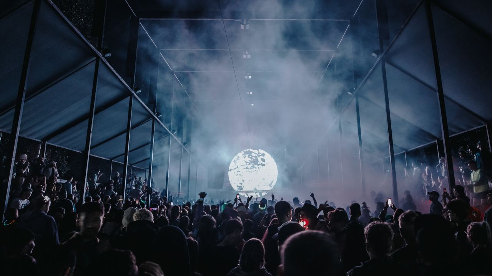
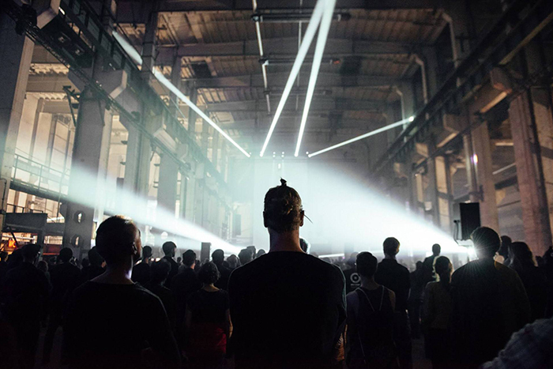

17 - 20 августа 2023  c 17:00 до 23:59
c 17:00 до 23:59
{kind=link}
За последние несколько лет мы стали свидетелями расцвета новой культуры Челябинска. Появились промо-команды, творческие объединения, художники, музыканты и диджеи пересматривающие привычную оптику для восприятия и понимания жизни в регионе. Фестиваль ставит своей задачей объединить и поддержать местную сцену, создав двухдневную площадку для культурного обмена в центре города. Гостей фестиваля ждут три площадки в шаговой доступности (клуб РМЦ, летний танцпол «Сетка» и большая чилл-зона у трубы) и два дня мероприятий: первый день будет посвящен открытию фестиваля и вечеринке открытия, второй день пройдет под эгидой образовательных и творческих мероприятий с финальным концертом и вечеринкой после. На площадках фестиваля будут выступать диджеи и музыканты из Москвы, Санкт-Петербурга, Казани, Екатеринбурга и Челябинска. Встретимся на SIGNAL!
О мероприятии
{kind=link}
Экосистема с годовым жизненным циклом, Signal Festival проводит седьмой сезон в крупнейшем арт-парке
Никола-Ленивец.
Сцена Signal. Хард-техно с максимальной отдачей от героя тяжеловесных рейвов из Италии — Rian Wood в
рамках саб-ивента Monasterio, проект Phurpa — ритуальная музыка буддистской традиции Бон в формате
AV-лайва, резидент Popoff Kitchen Roma Ptashenko и представительница новой европейской школы
хард-транса Varya Karpova.
Meadow. Howie Lee — эклектичный экспериментатор из Пекина и один из главных экспортеров аутентичного
китайского саунда по всему миру, Kosaya Gora — совместный проект дивы новой электронной музыки Kedr
Livanskiy и аудиовизуального художника Flaty и делирий, обрамленный электроникой тончайшей выделки,
в исполнении группы 4 Позиции Бруно.
Ключевая фигура румынской сцены продюсер Piticu выступит на Mobius.
В этом году хостят сцену Flower гуру чилл-рейва Geju.
Завершает волну казанский дуэт, покоряющий международную сцену, — Yung Acid.
Термин техно используется для большого количества видов электронной музыки. Особый, нетанцевальный аспект может быть найден в отдельном направлении техно - эмбиент, на треках лейбла WARP. Другой вид многих стилей - детройтское техно.
Подобно хаусу, оригинальное техно характерно четырьмя четвертями 1 2 3 4. Оно несколько быстрее чем хаус (126-130 BPM) и не всегда содержит диско-хлопки. Минимальное техно -просто ритм и чуть-чуть звука. Техно - крайность танцевальной музыки, которая имеет те же самые ритмические основы, что и другие виды хауса, но использует более интенсивный синтезаторные сэмплы. Существует множество вариаций на эту тему. Тяжелые версии, известные как рэйв и транс, более быстрые версии - габба (Голландский жанр).Список артистов:
Направления электронной музыки

Техно (Techno)
Хаус (House)
В середине 80-х в Чикаго возник новый вид танцевальной музыки - хаус. Название происходит от клуба Warehouse (склад). Именно там чикагские ди-джеи впервые попробовали микшировать синглы группы Kraftwerk со звуком кардинально нового для того времени устройства под названием драм-машина. Они обращались к традициям андеграунда и лучшие современные треки все еще звучат несколько "андеграундно", возможно также из-за качества записи. Корни этой музыки - диско. Характерным является ритм дискотеки, свинговое звучание, заводные мелодии и общее настроение радости и веселья. Одним словом - музыка для счастливых.
Классический хаус прост: бит - четыре четверти: 1 2 3 4 и не слишком быстрый темп (120 ударов в минуту), соответствующий сердцебиению танцора. Многие полагают, что барабанные сэмплы, используемые в классике от MFSB "Love is the message" - это фундамент хауса. Также широко используется развеселый вокал в духе соул.
Транс (Trance)
Это нечто среднее между амбиентом и эйсид-хаусом. Транс значительно безопаснее для барабанных перепонок, чем любое техно, но под него можно отлично танцевать. Цель этой музыки - перенести тебя в другие миры посредством движения. Пластичный и четкий, очень "космический", транс редко преодолевает отметку "150 bpm" (150 ударов в минуту).
Хардкор (Hardcore)
Это страшной скорости музыка. Удары молотком по голове со скоростью от 150 до 220 ударов в минуту. Знатоки говорят, что если слушать такую музыку достаточно долго, возникает ощущение, что мир превратился в огромную бензопилу. Хардкор - это просто ускорение техно плюс фрагменты известных песен, которые в результате звучат так, будто кто-то переключил скорость проигрывателя с 33-х на 45 оборотов в минуту. Иногда кажется, что это просто старый добрый speed-metal, но с техно-битом в качестве подкладки. Но это только кажется...
Джангл / Драм-н-басс (Jungle / Drum'n'bass)
Ошеломляюще быстрая музыка с жутко сложным ритмом и сильно искореженной линией басовых инструментов. Почему "джунгли"? Эта музыка построена на ритме, а самый сложный ритм, как известно, водится в Африке.
Джангл появился в Лондоне. Он также называется драм-н-бассом, потому что барабан и бас очень характерны для этой музыке. Послушайте Timeless от Goldie - классический трек 1995 года: 21 минута музыки.
Барабан и бас вообще часто используется в танцевальной музыке, роке и поп-музыке. Так что название вероятно слишком общее, для того, чтобы именовать этот несколько высокомерный стиль. Также имеется третий элемент, который является характерным для драм-н-баса - это струнные. Три ингридиента джангла. Во-первых, струнные (не скрипки, а некоторый продолжительный электронный звук, который содержит также духовые инструменты). Слушайте L.T.J Bukem: он придал этим вступительным звукам несколько пасторальный характер. Это воздушно, ориентированно в пространство.
Далее - басовая линия. Она сильно отличается от прямого баса хауса. Чувствуется влияние регги. Басовая линия плывет. Она не качается, как в тяжелом клубном хаусе (габба или хардкор), а именно плывет.
Третий и наиболее явный элемент - барабан. Это - быстрый брейк-бит. Барабаны отличаются от хауса и скоростью и сэмплом. Хаус - 120 ударов в минуту, джангл - намного быстрее. Сэмпл хауса - 1 2 3 4, в то время как брейк-бит джангла - что-то вроде 1 2 33 4. Имеются дополнительные хлопки между 3 и 4. В большинстве треков, имеется только один ритм; если имеется больше, то громкий и быстрый брейк-бит джангла перекрывает другие.
И все вместе в течение не менее семи минут. Добавим крики птиц. Также характерен один момент тишины, после которого звук снова продолжается. Это становится увлекательным как только вы привыкнете (что может потребовать некоторого времени).
{kind=link}